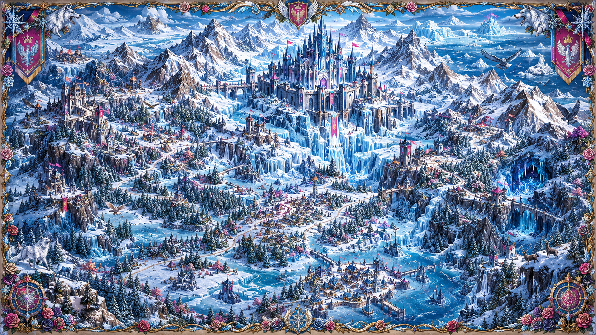

❄️ Nord Glacial

🏰 Palais de Givre
🏯 Forteresse du Levant
🕳️ Grotte Bleue
🏘️ Village d'Hivernel
🌉 Pont des Cascades
🐺 Forêt des Loups Blancs
Bienvenue dans le Nord Glacial
Cliquez sur un lieu de la carte pour découvrir son histoire.
⬅ Retour au Royaume Rose